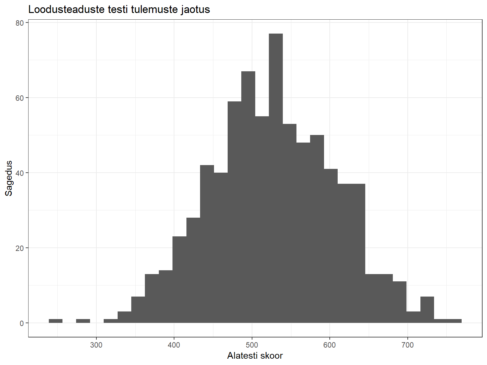
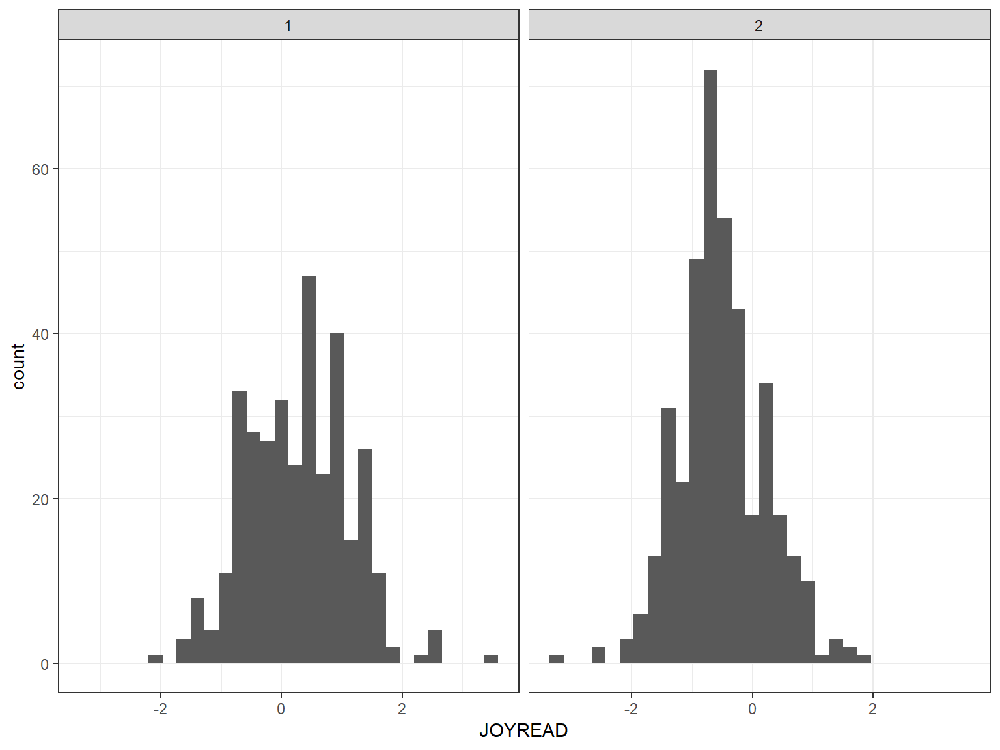
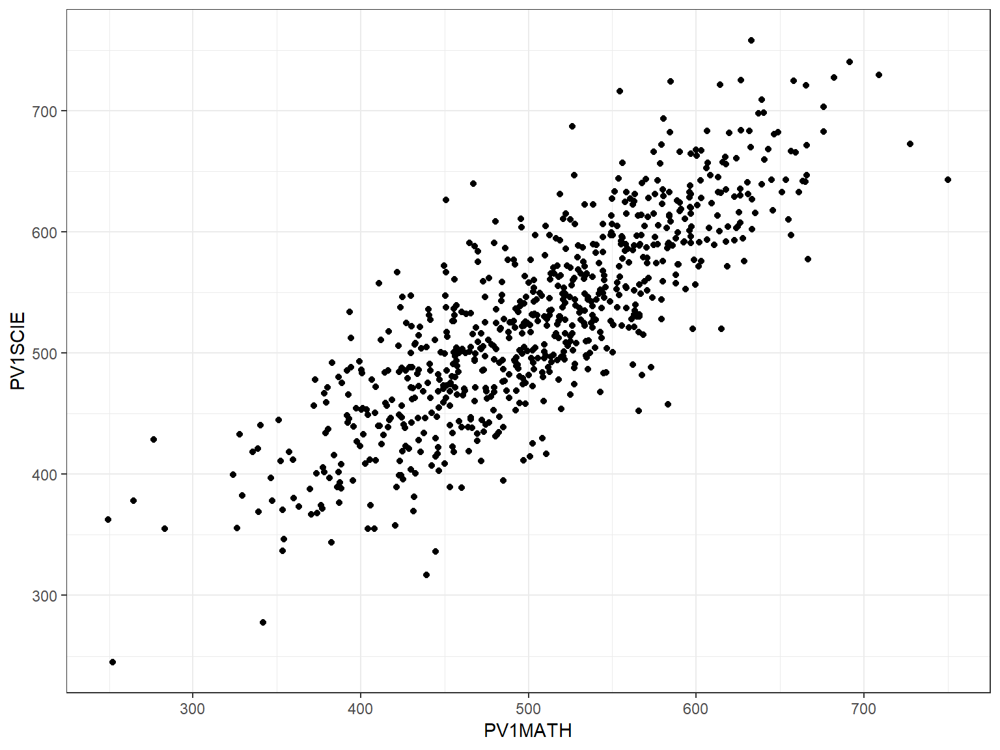
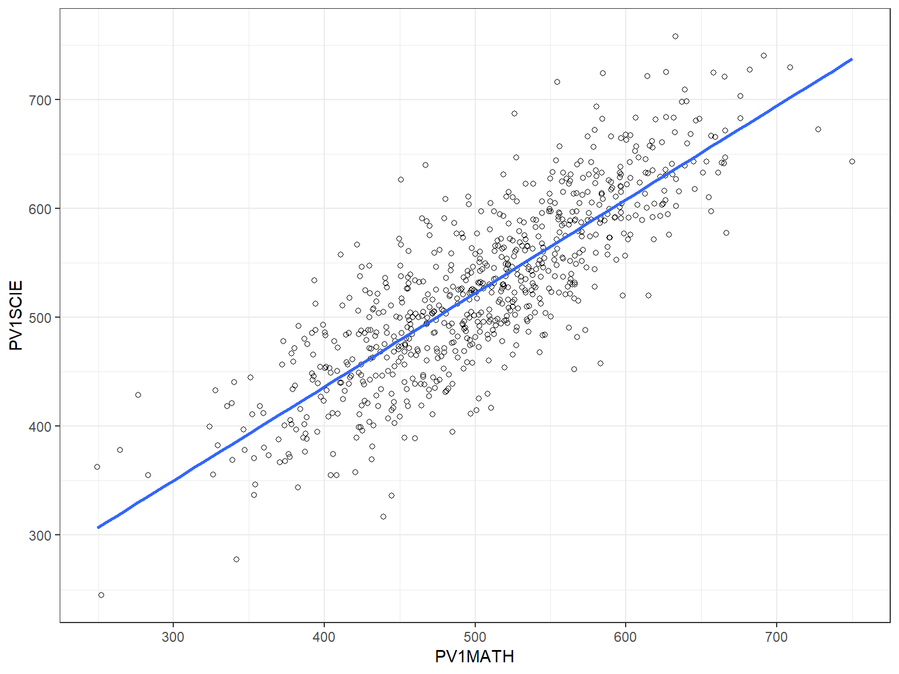
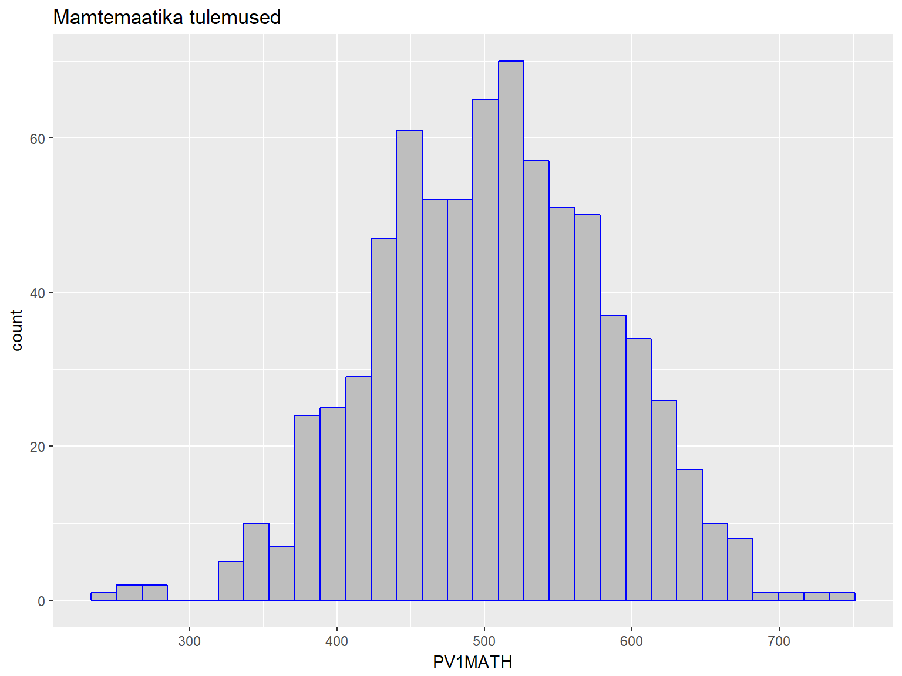
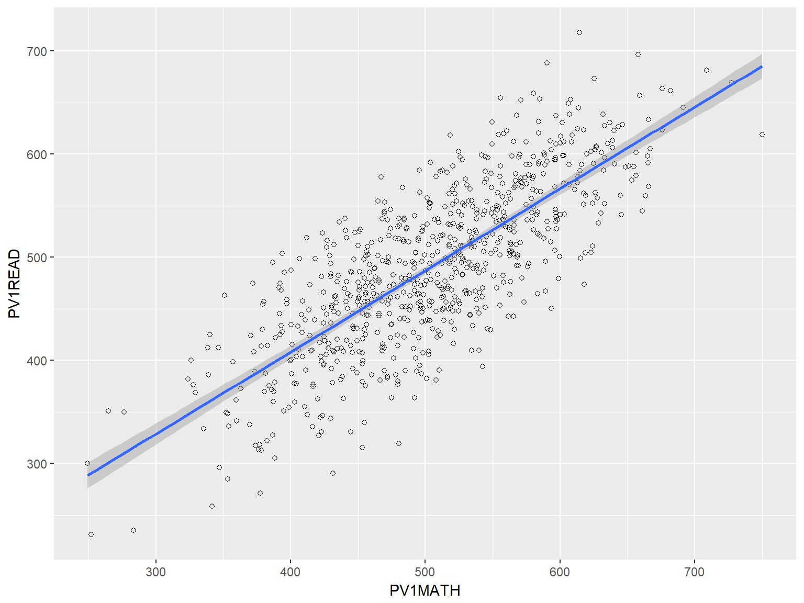
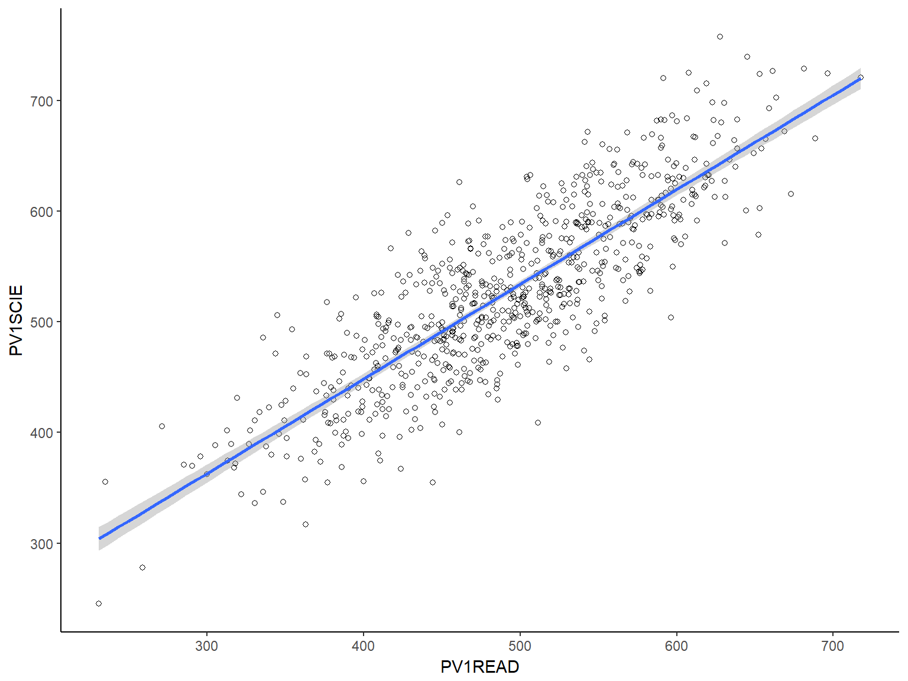
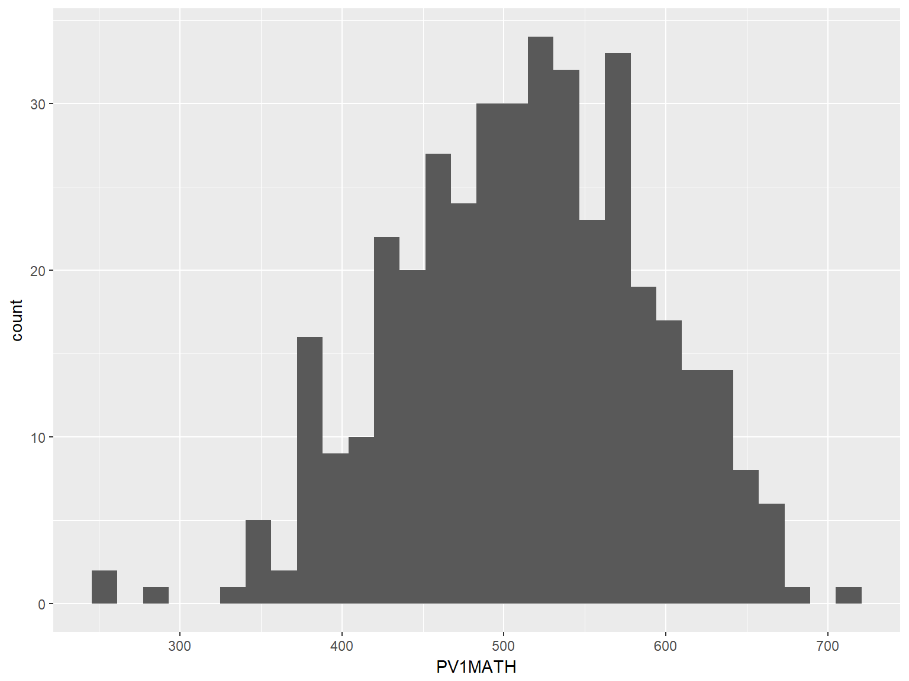

- praktikum: Joonised
Martin Kolnes, Karin Täht
Praktikumi eesmärgid
- Vaatame üle, kuidas lugeda andmeid RStudiosse
- Jooniste abil andmetega tutvumine
- Korrelatsioonanalüüs ja hajuvusdiagramm
- Keskmiste võrdlemine kahe grupi korral
Laadige alla praktikumi andmed.
Töökausta määratlemine
Alustuseks peaksime rääkima sellisest mõistest nagu R-i töökaust. Kui me RStudio käivitame, määrab R ära kausta, millest ta vaikimisi faile otsima hakkab. Kui tahame salvestada andmeid või jooniseid, siis salvestatakse ka need vaikimisi just sinna kausta. Seda kausta nimetataksegi R-i töökaustaks. Windowsi arvutis on vaikimisi töökaustaks My Documents. Andmefailid, mida me laadida tahame, paiknevad tõenäoliselt mõnes muus kaustas või alamkaustas. R-i töökausta muutmiseks peaksime otsima RStudio Files-paneeli (akna alumises parempoolses nurgas) abil üles selle kausta, milles meid huvitav andmefail paikneb. Seejärel peaksime muutma selle kausta R-i töökaustaks, vajutades Files-paneeli ülaosas asuvat nuppu More ja valides avanevast menüüst Set As Working Directory.

Kordamine
Kasutame andmestikku PISA.
- Tehke praktikumi materjalide jaoks arvutis eraldi kaust. Tõstke materjalid sinna kausta ja laadige need RStudiosse.
- Leidke uuringus osalenute keskmine vanus.
mean(pisa$AGE)# keskmise arvutamiseks sai kasutada funktsiooni mean()## [1] 15.81886#summary(pisa)#annab ülevaate tervest andmestikust- Leidke tüdrukute ja poiste keskmine vanus.
mean(pisa[pisa$Gender==1, "AGE"])## [1] 15.82267mean(pisa$AGE[pisa$Gender == 1])## [1] 15.82267mean(pisa[pisa$Gender==2, "AGE"])## [1] 15.81559sd(pisa[pisa$Gender==1, "AGE"])## [1] 0.2756248sd(pisa[pisa$Gender==2, "AGE"])## [1] 0.2882858- Kui palju tüdrukuid ja poisse oli uuringus (1 = tüdruk, 2 = poiss)?
table(pisa$Gender)##
## 1 2
## 345 401mean(pisa[pisa$Gender==2, "AGE"])## [1] 15.81559- Kui palju õpilasi oli erinevates klassides (GR - klassid)?
table(pisa$GR)##
## 7 8 9
## 15 202 529Andmete sisselugemine Excelist ja SPSS-ist
RStudiosse saab andmeid laadida mitmel erineval viisil. Selles praktikumis vaatame kõige kiiremat moodust - andmete laadimine funktsioonide abil. Teiste viisidega tutvumiseks vaadake lisamaterjalide alt konspekti Andmete Importimine.
Laadige enda arvutisse:
1) Andmestik nimega Kysimustik(csv-formaadis);
2) Andmestik nimega Kysimustik(xls-fomraadis).
Paljude andmeformaatide jaoks on R-is olemas spetsiifilised funktsioonid:
- read.csv ja read.csv2 - csv-formaadis olevate andmete jaoks;
- read.xlsx (paketis “xlsx”) - Exceli failide jaoks;
- read.spss (paketis “foreign”) - SPSS failide jaoks;
- read.table - txt-formaadis olevate andmete jaoks.
Csv-formaadis olevate andmete sisselugemiseks saame kasutada funktsiooni read.csv(). Funktsiooni esimeseks arugmendiks pange andmestiku asukoht koos andmestiku nimega (minu arvutis oleks esimene argument antud andmete puhul “C:/Users/Martin/ownCloud/rojects/Rwebsite/martinkolnes.github.io/KMKT/2praktikum/Kysimustik.csv”).
andmed <- read.csv("C:/Users/Martin/ownCloud/Projects/Rwebsite/martinkolnes.github.io/KMKT/2praktikum/Kysimustik.csv", header=TRUE, sep =";")
#lisaargumendiga "header" anname teada, et esimesel real on muutujate nimed
#lisaargumendiga "sep" anname teada, missuguse tähistusega eraldatakse veerge (peamised võimalused: sep = "," - eraldajaks koma, sep = " " - erldajaks tühik, sep = ";" - eraldajaks semikoolon, sep = "\t" - eraldajaks TABiga(tabulaatoriga))Excelis olevate andmete importimiseks peame esialgu installeerima RStudiosse uue pakti nimega xlsx. Kirjutage konsoolile järgmine rida:
install.packages("xlsx")Nüüd saame kasutada selles paketis olevat funktsiooni read.xlsx(). Esimeseks argumendiks paneme jälle andmestiku asukoha koos andmestiku nimega.
library(xlsx)#teeb paketis olevad funktsioonid aktiivseks.
andmed <- read.xlsx("C:/Users/Martin/ownCloud/Projects/Rwebsite/martinkolnes.github.io/KMKT/2praktikum/Kysimustik.xls", sheetIndex = 1) Jooniste abil andmetega tutvumine
Jooniste tegemiseks soovitame kasutada paketti ggplot2. See on populaarne R’i pakett, mis võimaldab vähese vaevaga teha ilusaid jooniseid. Selles paketis on kaks funktsiooni jooniste tegemiseks: ggplot() ja qplot(). Meie soovitame kasutada funktsiooni ggplot(), sest see on paindlikum ja võimaldab erinevaid andmestikke ühele joonisele lisada.
Ülevaade selles paketis olevatest erinevatest funktsioonidest leiate lehelt http://docs.ggplot2.org/current/.
Vaatame esmalt üle, missugune on funktsioonile ggplot() antavate argumentide järjekord.
library(ggplot2)# esmalt aktiveerime paketi. NB! pakett peab olema enne installeeritud
ggplot(andmed, aes(x = tunnus1, y = tunnus2)) #See on struktuur, mida saate alati joonise tegemisel kasutada.Sellisel kujul me veel ei näe joonist. Joonise ehitamine ggplot() funktsiooniga toimub kihtide alusel. Me peame lisama kihi, mis loob x ja y elementidest vastava struktuuri (sõltub sellest, kas tahame tunnuseid näha punktidena, tulpadena, ühendatud joontega jne.). Tulpade joonistamiseks peaksime lisama geom_bar():
ggplot(andmed, aes(x = tunnus1, y = tunnus2)) +
geom_bar()Histogramm
Numbriliste tunnuste puhul peaks vaatama, milline on andmete jaotus. See annab meile ettekujutuse sellest, kas andmed on enam-vähem normaaljaotusega ja kas esineb üksikuid äärmuslikke väärtusi. Andmestikus PISA on kolm olulist tunnust, mille jaotust võiks uurida: lugemine (skoor muutujas nimega PV1READ), matemaatika (PV1MATH) ja loodusteadused (PV1SCIE). Teeme histogrammi lugemise alatesti skooride (PV1READ) jaotuse kohta.
ggplot(pisa, aes(x=PV1READ))+
geom_histogram()Histogrammi välimuse muutmiseks saab funktsioonile lisada erinevaid argumente:
- labs() - võimaldab muuta joonise pealkirja, x-ja y-telje nimesid (labs(title= “jooniuse pealkiri”, x = “x-telje nimi”, y = “y-telje nimi”)).
- xlim() - horisontaaltelje otspunktide väärtused. Otspunktide väärtused tuleb anda funktsiooni c() sees, nt nii: xlim(c(100, 800))
- ylim() - vertikaaltelje otspunktide väärtused, samal kujul nagu argument xlim.
- col - tulpade värv. See argument lisatakse tavaliselt joonise struktuuri täpsustava kihi juurde (näiteks geom_histogram(col = “blue”, fill = “green”)). Värvi väärtust saab muuda kahel viisil: 1) värvi nimega(nt “grey”, “red”, “blue”); 2) peenemaid värvitoone saab valida värvi heksadetsimaalkoodi abil (nt #FF0000 on punase värvi kood). Need koodid leiata, kui guugledate hexadecimal color codes.
- vormide kasutamine - joonisele saab lisada juba eelnevalt seadistatud vormi, mis kujundab joonise välimust. Näiteks argument theme_bw() annab joonisele valge tausta. Mõned klassikalised vormid leiata lehelt https://www.r-bloggers.com/ggplot2-themes-examples/.
Kui sooviksime teha ülalolevat histogrammi natuke ilusamaks, siis võiksime koodi lisada järgmised täpsustused:
ggplot(pisa, aes(x=PV1READ))+ #pluss märk näitab, et me liidame siia veel ühe argumendi juurde
geom_histogram(col = "blue", fill = "gray")+
labs(title = "Lugemise alatesti skooride jaotus", x ="Alatesti skoor" , y = "Sagedus")+
theme_bw()Kui tahate joonist suuremal kujul vaadata, siis vajutage RStudio Plots-paneelil olevat nuppu Zoom. Joonise pildifailina salvestamiseks vajutage nuppu Export ja valige avanevast menüüst Save as Image.
Ülesanne
1. Tehke histogramm loodusteaduste (PV1SCIE) tulemustega.
ggplot(pisa, aes(x = PV1SCIE))+
geom_histogram()+
labs(title = "Loodusteaduste testi tulemuste jaotus", x ="Alatesti skoor" , y = "Sagedus")+
theme_bw()
Tulpdiagramm (barplot)
Kategooriatest koosneva tunnuse sageduse kujutamiseks kasutatakse tulpdiagrammi. Veerus nimega GR (grade) on kirjas õpilase klass. Teeme selle tunnuse kohta tulpdiagrammi:
ggplot(pisa, aes(GR))+
geom_bar()+
labs(x ="klass" , y = "õpilasi valimis")+
theme_bw()Näeme, et enamik antud valimis olevatest õpilastest käivad 8. või 9. klassis. Tulpdiagramm on eriti kasulik juhul, kui kategooriaid on rohkem. See annab meile hea ülevaate gruppide suurustest ja võimaldab tuvastada teistest eristuvaid gruppe.
*LISA
Tulpdiagrammi abil saab ka kujutada gruppide keskmisi tulemusi. Kujutame näiteks matemaatika skoori keskmisi tulemusi klasside lõikes. Selle tegemiseks peame lisama kihile geom_bar kaks argumenti: “stat =”summary“”" ja “f”un.y = “mean”“. Need argumendid näitavad, et me kasutame joonise tegemiseks keskmisi tulemusi.
ggplot(pisa, aes(y=PV1MATH, x = GR))+
geom_bar(aes(group = GR), stat = "summary", fun.y = "mean") +
labs(x ="klass" , y = "matemaatika alatesti keskmine skoor")Kontrollimise mõttes võiks need tulemused arvutada ka funktsiooniga mean. Gruppide lõikes mingi kirjeldava statistika näitaja arvutamiseks soovitan kasutada funktsiooni nimega tapply.
Funktsiooni tapply argumentideks on 1) numbriline tunnus, 2) grupeeriv tunnus, 3) kirjeldava statistika funktsiooni nimetus (nt mean, median, sd), 4) na.rm=TRUE juhul kui andmetes esineb puuduvaid väärtusi.
tapply(sõltuv tunnus, grupeeriv tunnus, kasutatav funktsioon)tapply(pisa$PV1MATH, pisa$GR, mean, na.rm=TRUE)## 7 8 9
## 359.4100 485.1533 517.5558Normaaljaotuse testmine
Teeme siinkohal väikse kõrvalepõike nomraaljaotuse testimise juurde. Histogrammide abil saime üldise ettekujutuse andmete jaotusest, aga me peaksime hindama seda ka statistiliselt. Üks levinumaid statistilisi meetodeid normaaljaotuse kontrollimiseks on Shapiro Wilki test. Selle testi väljundist tuleb vaadata p-value-t. Kui p-value on väiksem kui 0.05, siis ei ole andmed selle testi kohaselt normaaljaotuslikud. Vaatame kahe muutuja jaotust (PV1READ, JOYREAD) sugude lõikes.
# Kontrollime naiste(1) puhul tunnuse "PV1READ" normaaljaotust:
shapiro.test(subset(pisa$PV1READ, pisa$Gender == 1)) ##
## Shapiro-Wilk normality test
##
## data: subset(pisa$PV1READ, pisa$Gender == 1)
## W = 0.99611, p-value = 0.5587# Kontrollime meeste(2) puhul tunnuse "PV1READ" normaaljaotust:
shapiro.test(subset(pisa$PV1READ, pisa$Gender == 2))##
## Shapiro-Wilk normality test
##
## data: subset(pisa$PV1READ, pisa$Gender == 2)
## W = 0.99713, p-value = 0.7095# Kontrollime naiste(1) puhul tunnuse "JOYREAD" normaaljaotust:
shapiro.test(subset(pisa$JOYREAD, pisa$Gender == 1))##
## Shapiro-Wilk normality test
##
## data: subset(pisa$JOYREAD, pisa$Gender == 1)
## W = 0.9912, p-value = 0.03983# Kontrollime meeste(2) puhul tunnuse "JOYREAD" normaaljaotust:
shapiro.test(subset(pisa$JOYREAD, pisa$Gender == 2))##
## Shapiro-Wilk normality test
##
## data: subset(pisa$JOYREAD, pisa$Gender == 2)
## W = 0.99, p-value = 0.008508Praktikas leiab harva selle testi põhjal normaalajotusele vastavust, st on levinud asümmeetriakordaja (skewness) ning ekstsessi (kurtosis) põhjal normaaljaotuse hindamine. Andmeid peetakse normaaljaotusele ligilähedaseks siis, kui asümmeetriakordaja ja järsakusaste/ekstsess on vahemikus -1 kuni 1.
Vaatame, kuidas asümmeetrijakordajat (skew) ja ekstsessi (kurtosis) arvutada.
Selleks kasutame funktsiooni describe(), mis on paketi psych funktsioonide komplektis. Esmalt peame selle paketi enda arvutisse installeerima. See käib läbi RStudio konsooli:
install.packages("psych")#kirjutage see rida RStudio konsoolile. Paketi installeerimise peale võib minna natuke aega.Nüüd saame kasutada funktsiooni describe. Sellele funktsioonile anname argumendiks ühe grupi andmed.
library(psych)#selle käsuga teeme antud paketi funktsioonide aktiivseks
describe(subset(pisa$PV1READ, pisa$Gender == 1))#naiste andmed## vars n mean sd median trimmed mad min max range skew
## X1 1 345 513.54 75.16 516.82 514.99 79.97 305.03 717.8 412.77 -0.14
## kurtosis se
## X1 -0.26 4.05describe(subset(pisa$PV1READ, pisa$Gender == 2))#meeste andmed## vars n mean sd median trimmed mad min max range skew
## X1 1 401 472.63 78.73 468.23 473.35 77.61 230.93 681.39 450.46 -0.11
## kurtosis se
## X1 -0.04 3.93** Ülesanne **
2. Missugused on tunnuse JOYREAD asümmeetrijakordaja ja ekstsess sugude lõikes? Kas neid võib pidada normaaljaotusele vastavaks?
describe(subset(pisa$JOYREAD, pisa$Gender == 1))#naiste andmed## vars n mean sd median trimmed mad min max range skew kurtosis
## X1 1 341 0.29 0.85 0.3 0.28 0.82 -2.07 3.5 5.57 0.18 0.3
## se
## X1 0.05describe(subset(pisa$JOYREAD, pisa$Gender == 2))#meeste andmed## vars n mean sd median trimmed mad min max range skew kurtosis
## X1 1 396 -0.5 0.72 -0.58 -0.52 0.64 -3.23 1.93 5.16 0.18 0.52
## se
## X1 0.04- Tehke histogrammid tunnuse JOYREAD jaotuste kohta. Kasutage allolevat koodi, et eristada ühel joonisel poiste ja tüdrukute tulemusi.
ggplot(andmed, aes(x=tunnus))+
geom_histogram()+
facet_wrap(~kategoriseeriv tunnus)ggplot(pisa, aes(x=JOYREAD))+
geom_histogram()+
facet_wrap(~Gender)+
theme_bw()
Korrelatsioonanalüüs
Kui tahate arvutada korrelatsiooni kahe muutuja vahel, siis soovitan kasutada funktsiooni cor.test(). Vaikimisi teeb see funktsioon Pearsoni korrelatsioonanalüüsi. Selle seade muutmiseks peab lisama argumendi “method =”spearman“”.
cor.test(pisa$PV1MATH, pisa$PV1READ)##
## Pearson's product-moment correlation
##
## data: pisa$PV1MATH and pisa$PV1READ
## t = 33.213, df = 744, p-value < 2.2e-16
## alternative hypothesis: true correlation is not equal to 0
## 95 percent confidence interval:
## 0.7421848 0.8001879
## sample estimates:
## cor
## 0.7727951Antud juhul on p-väärtus < 2.2e-16 ehk p-väärtus on väiksem kui \(2.2 * 10^-16\). Sellist kirjapilti kasutatakse väga väikeste väärtuste esitamiseks.
Kui tahate aga arvutada korrelatsiooni mitme muutuja kohta korraga, siis soovitan kasutada funktsiooni corr.test() pakatist psych. Ka selle funtksiooni puhul saab korrelatsioonianalüüsi meetodit muuta, kui lisada argument “method =”spearman“”.
library(psych)
corr.test(pisa[,c("PV1READ", "PV1MATH", "PV1SCIE")])## Call:corr.test(x = pisa[, c("PV1READ", "PV1MATH", "PV1SCIE")])
## Correlation matrix
## PV1READ PV1MATH PV1SCIE
## PV1READ 1.00 0.77 0.84
## PV1MATH 0.77 1.00 0.83
## PV1SCIE 0.84 0.83 1.00
## Sample Size
## [1] 746
## Probability values (Entries above the diagonal are adjusted for multiple tests.)
## PV1READ PV1MATH PV1SCIE
## PV1READ 0 0 0
## PV1MATH 0 0 0
## PV1SCIE 0 0 0
##
## To see confidence intervals of the correlations, print with the short=FALSE optionHajuvusdiagramm (scatterplot)
Korrelatsiooni illustreerimiseks saab kasutada hajuvusdiagrammi. See võimaldab öelda, kas seos tunnuste vahel on lineaarne ja kas andmetes esineb üksikuid erindeid, mis võivad tulemusi kallutada. Teeme hajuvusdiagrammi matemaatika ja loodusteaduste alatesti tulemustega.
ggplot(pisa, aes(x= PV1MATH, y = PV1SCIE))+
geom_point()+#hajuvusdiagrammi lisamine
theme_bw()
Vaikimisi tähistavad hajuvusdiagrammil andmepunkte mustad punktid. Nende kuju saame muuta, kui lisame kihile geom_smooth arugmendi “shape = …”. Selle argumendi väärtus määrab punktide kuju (Joonis 2):

Joonis 2. Argumendis shape väärtused
Hea oleks joonisele lisada regressioonisirge, mis näitab muutujatevahelise seose tugevust ja suunda. Seda saab teha, kui lisada uus kiht geom_smooth() argumendiga “method = lm”:
ggplot(pisa, aes(x= PV1MATH, y = PV1SCIE))+
geom_point(shape=1) + # shape = 1 - tühjad ringid
geom_smooth(method=lm, # lisab regressioonisirge
se=FALSE)+ # SE = FALSE - ei lisa usalduspiire
theme_bw()
Keskmiste võrdlemine kaha grupi korral (t-test)
T-testi abil saame võrrelda, kas kahe grupi keskmised erinevad statistiliselt olulisel määral. T-testi saame teha funktsiooniga t.test:
t.test(y~x), kus y on numbriline tunnus ja x on kategooria (binaarne).
t.test(pisa$PV1READ~pisa$Gender)##
## Welch Two Sample t-test
##
## data: pisa$PV1READ by pisa$Gender
## t = 7.251, df = 735.99, p-value = 1.049e-12
## alternative hypothesis: true difference in means is not equal to 0
## 95 percent confidence interval:
## 29.83468 51.98782
## sample estimates:
## mean in group 1 mean in group 2
## 513.5414 472.6302#t.test(PV1MATH~Gender, data=pisa) # võime kirjutada funktsiooni ka sellisel kujulÜlesanne
4. Uurige hüpoteesi: poiste ja tüdrukute keskmised tulemused matemaatika testis on erinevad.
t.test(pisa$PV1MATH~pisa$Gender)##
## Welch Two Sample t-test
##
## data: pisa$PV1MATH by pisa$Gender
## t = -2.4794, df = 726.74, p-value = 0.01339
## alternative hypothesis: true difference in means is not equal to 0
## 95 percent confidence interval:
## -25.273729 -2.936305
## sample estimates:
## mean in group 1 mean in group 2
## 498.0201 512.1252Karpdiagramm (boxplot)
Gruppide võrdlemisel saab kasutada karpdiagrammi. Vaatame matemaatiak tulemuste jaotusi sugude lõikes karpdiagrammi abil.
ggplot(pisa, aes(y = PV1MATH, x = as.factor(Gender)))+
geom_boxplot()+
labs(x = "klass", y = "matemaatika alatesti skoor")
Mida karpdiagrmmi osad tähistavad? Karbi keskel olev joon on grupi mediaanväärtus (pooled väärtused on sellest suuremad ja pooled väiksemad). Karp ise tähistab kvartiilhaaret ehk keskmist 50% väärtustest. Juhul kui eraldi punktidena välja toodud äärmuslikke väärtusi ei esine, tähistavad vuntsid vastavalt grupi kõige suuremat ja kõige väiksemat väärtust. Äärmuslike erindite esinemise korral tähistab vunts kõige suuremat/väiksemat “mõistlikku” väärtust (st viimane andmepunkt, mis jääb karbi servast mitte rohkem kui 1,5-kordse kvartiilhaarde võrra üles- või allapoole). Kuidas gruppidevahelisi erinevusi tõlgendada? Kui kahe grupi karbid omavahel ei kattu, võib üsna julgelt öelda, et need grupid erinevad vaadeldava tunnuse osas. Kui karbid kattuvad ja mõlema grupi puhul jääb mediaan teise grupi karbi sisse, võib öelda et grupid ei erine tunnuse osas. Kui karbid kattuvad, aga vähemalt ühe grupi mediaan jääb väljapoole teise grupi karpi, võib aga ei pruugi oluline seos esineda. Sellisel juhul tuleks erinevust täpsemalt uurida mõne muu meetodiga nt t-testi või ANOVA-ga. Lisaks gruppidevahelistele erinevustele aitab karpdiagramm gruppide siseselt aimu saada ka jaotuse sümmeetrilisuse kohta. Kui karbi mediaanist ülespoole jääv osa on suurem kui allapoole jääv osa või üks vunts suurem kui teine, ei ole tunnus päris sümmeetiriliselt jaotunud.
Keskmised koos usalduspiiridega
T-testi tulemuse illustreerib aga paremini joonis, kus on esitatud keskmised tulemused koos usalduspiiridega. Siinkohal soovitan kasutada funktsiooni plotmeans paketist gplots. Seda joonist saab teha ka funktsiooniga ggplot, aga seal vajab see rohkem eeltööd (http://www.cookbook-r.com/Graphs/Plotting_means_and_error_bars_(ggplot2)/).
library(gplots) # enne tuleb pakett arvutisse insatalleerida
plotmeans(PV1MATH ~ Gender, data = pisa, frame = FALSE)
Ülesanded - Joonised
- Histogramm matemaatika alatesti tulemuste kohta (lisage joonisele pealkiri):
ggplot(pisa, aes(PV1MATH))+
geom_histogram(col = "blue", fill = "gray")+
labs(title = "Mamtemaatika tulemused")
- Tehke karpdiagramm, mis illustreerib poiste ja tüdrukute matemaatika alatestide skoore
ggplot(pisa, aes(x = as.factor(Gender), y = PV1MATH))+ #kui joonis ei tee eraldi tulpasi, siis tuleb lisada kategoriseerivale tunnusele funtksioon as.factor()
geom_boxplot(fill = "grey80", colour = "#3366FF")+ #värvisin karpide sisu hallikaks ja karpide ääre siniseks
scale_x_discrete(labels = c("tüdrukud", "poisid"))+
labs(x = "sugu", y = "matemaatika tulemused")+
theme_classic() #lisasin juba töödeldud vormi joonisele
- Näidake matemaatika ja lugemise alatestide tulemuste seost (lisage joonisele regressioonisirge). Arvutage ka korrelatsioonikordaja.
ggplot(pisa, aes(x= PV1MATH, y = PV1READ))+
geom_point(shape=1) + # shape = 1 - tühjad ringid
geom_smooth(method=lm, se=TRUE) # lisab regressioonisirge, se = TRUE - lisab usalduspiire
- Näidake lugemise ja loodusteaduste alatestide tulemuste seos (lisage joonisele regressioonisirge). Arvutage ka korrelatsioonikordaja.
ggplot(pisa, aes(x= PV1READ, y = PV1SCIE))+
geom_point(shape=1) + # shape = 1 - tühjad ringid
geom_smooth(method=lm, se=TRUE) + # lisab regressioonisirge, se = TRUE - lisab usalduspiire
theme_classic() 
- Tehke tulpdiagramm lugemise alatesti keskmiste tulemuste kohta erinevate klasside lõikes.
ggplot(pisa, aes(y=PV1READ, x = GR))+
geom_bar(aes(group = GR), stat = "summary", fun.y = "mean") +
labs(x ="klass" , y = "lugemise alatesti keskmine skoor")#kontrollime funktsiooniga tapply() kas saime joonisele õiged tulemused:
tapply(pisa$PV1READ, pisa$GR, mean, na.rm =TRUE)## 7 8 9
## 350.5693 466.1382 505.2515- Tehke eraldi histogramm tüdrukute ja poiste matemaatika alatesti tulemuste kohta:
#Selle ülesande lahendamiseks on mitu võimalust.
# Esiteks saate teha uued andmestikud funktsiooniga subset ja kasutada neid andmestikke jooniste koostamisel:
pisa_tydrukud <- subset(pisa, Gender == 1)
pisa_poisid <- subset(pisa, Gender == 2)
# Teiseks saate kasutada ka joonise koostamise ajal funktsiooni subset:
ggplot(subset(pisa, Gender == 1), aes(x=PV1MATH))+
geom_histogram()+
labs(tilte ="Tüdrukute tulemused")ggplot(subset(pisa, Gender == 2), aes(x=PV1MATH))+
geom_histogram()+
labs(tilte ="Poiste tulemused")
#Kolmandaks saate kasutada ggplot'i kihti nimega facet_wrap()
ggplot(pisa, aes(x=PV1MATH))+
geom_histogram()+
facet_wrap(~Gender)#selle kihiga saab lisada kategoriseeriva tunnuse joonisele
- Analüüsiga, kas poiste ja tüdrukute keskmised tulemused erinevad lugemise nautimise suhtes (JOYREAD) ja õpetajaga läbisaamise suhtes(STUDREL). Tehke tulemsute kohta joonised (keskmised koos usalduspiiridega).